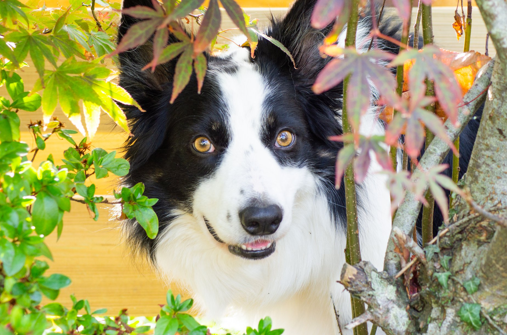

Lessen
Ik geef op 2 manieren les. De eerste is op locatie. Dit kan overal zijn, van een grasveld tot een tuincentrum. Meestal train ik buiten of bij iemand thuis. Lessen zijn 1 op 1. Ik geef maximaal 2 personen tegelijk les en dat alleen als de honden goed met elkaar overweg kunnen.
Ook verzorg ik online lessen. Dit houdt in dat je bij mij een cursus volgt waarbij je via video's en filmpjes je huiswerk inlevert. Je krijgt van mij vervolgens feedback en tips over wat ik op de filmpjes zie. Ook geef ik aan hoe je de vorige stappen verder uit kunt breiden.
Wil je niet direct een hele cursus volgen maar eenmalig feedback krijgen over een specifiek filmpje of een probleem dat je bij de training hebt? Ook dat is mogelijk!
Workshops
Workshops geef ik aan maximaal 4 personen. Ik geef workshops voor beginners (1 dagdeel) en gevorderden(2 dagdelen). Ook kan ik workshops geven in specifieke onderdelen, zoals bijvoorbeeld de verwijzing of line-ups. Wil je een workshop organiseren? Neem dan contact op via het contactformulier!
Prijzen
Lessen op locatie zijn 30 euro voor een half uur.
Online lessen zijn 25 euro per stuk, of 10 voor 200 euro.
Workshops zijn 50 euro p.p. per dagdeel.
